Introduction
Android 및 웹 프론트에 관심이 많으며, 리팩토링으로 코드의 효율성을 개선하는 것을 좋아합니다.
Express.js 와 MongoDB를 사용하여 웹 서비스를 개발하고 있으며,
Kotlin, ReactiveX, MVVM 에 대해 공부하고 있습니다.
Education
Contact
Email :
dev_hoony@naver.com
Phone :
010-2386-8753
Things I Can Do
Java
80%
클래스와 인터페이스의 상속을 이용하여 원하는 객체를 생성할 수 있으며,
다양한 자료구조 및 알고리즘을 구현해보았습니다.
Kotlin
65%
코틀린의 변수 및 기본적인 문법에 대해 이해하고 있으며,
코루틴에 대해서 익히고 있습니다.
Android
70%
ViewPager, RecyclerView 및 다양한 레이아웃을 사용하여 원하는 UI를 제작할 수 있습니다.
Retrofit, Glide 등 필요에 맞는 라이브러리를 활용할 수 있습니다.
Javascript
70%
module을 적극 활용하여 객체지향적으로 구조를 짜고,
Promise, async/await를 사용하여 동기/비동기를 제어할 수 있습니다.
CSS
85%
position, display 속성을 사용하여 원하는 레이아웃을 만들 수 있으며,
여러 선택자를 활용하여 (ex. :before, :after) 다양한 뷰를 제작할 수 있습니다.
MongoDB
55%
기본적인 CRUD부터 aggregate의 다양한 연산자 ($match, $group, $facet 등..)를 활용하여
원하는 형식의 데이터를 가져올 수 있습니다.
AWS
40%
EC2 인스턴스 생성 및 환경설정을 할 수 있으며, Load Balancer를 사용하여 서버를 구성할 수 있습니다.
Express.js
65%
MVC 패턴으로 페이지 렌더링과 데이터를 불러오는 로직을 분리하여 사용할 수 있으며,
미들웨어 체인을 사용하여 인증 및 데이터 검증을 할 수 있습니다.
Work Experience & Projects
스틱코드
Kotlin
Java Swing
HttpClient
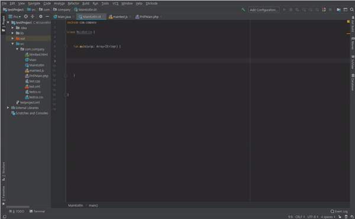
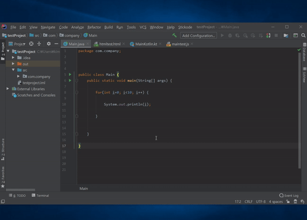
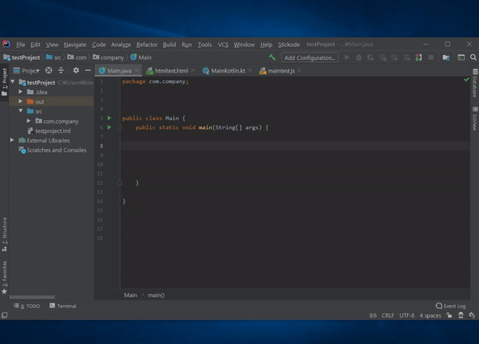
웹 또는 개발환경(IDE)에서 코드를 저장한 후, 개발환경(IDE)에서 자동완성 할 수 있는 코드 클라우드 서비스.
Personal Experience & Projects
나이스(NEIS) 자가진단 (교사용) 앱 (링크)
출시일 : 2020.06.10, 개발기간 : 2일, 기여도 : 100%
Java
Android
Jsoup
HttpClient
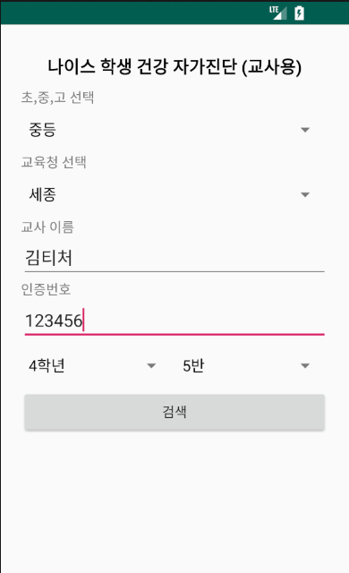
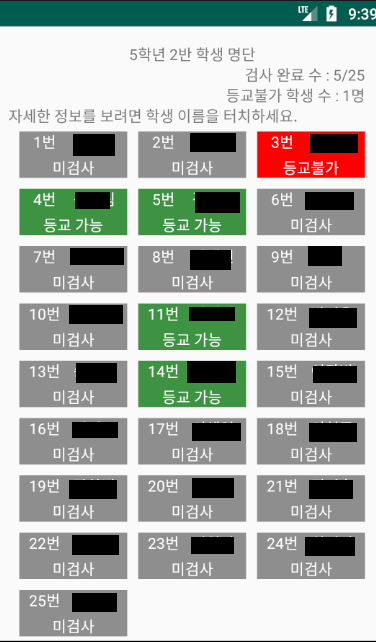
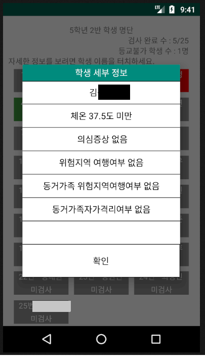
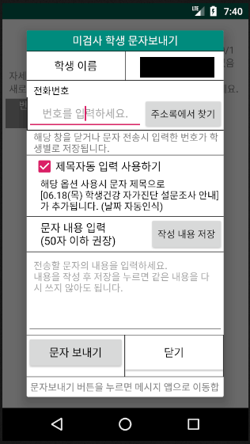
학생들의 등교 전 자가진단 여부를 확인할 수 있는 앱. (현재 운영종료)
AR 길이측정 및 가구배치 앱
개발기간 : 1주, 기여도 : 클라이언트(안드로이드)
Java
Android
Retrofit 2.0
AR core
Sceneform
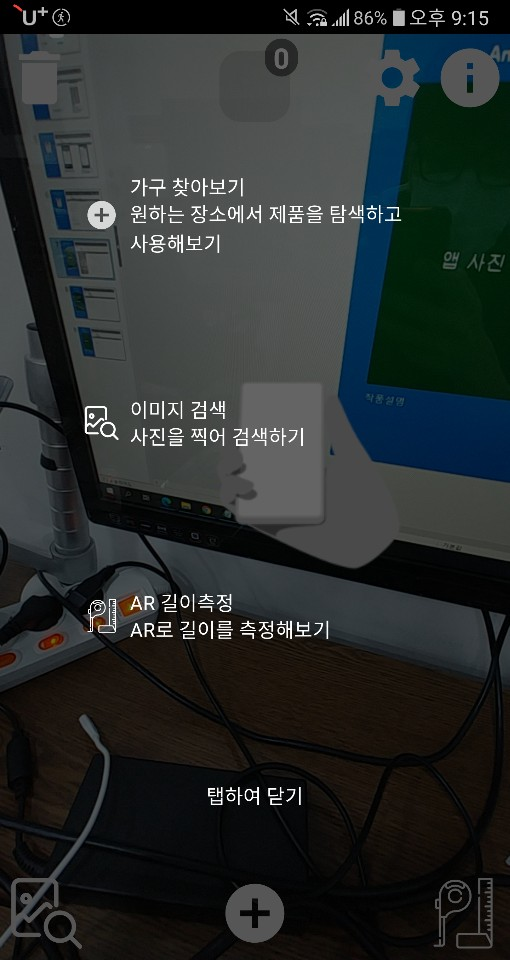
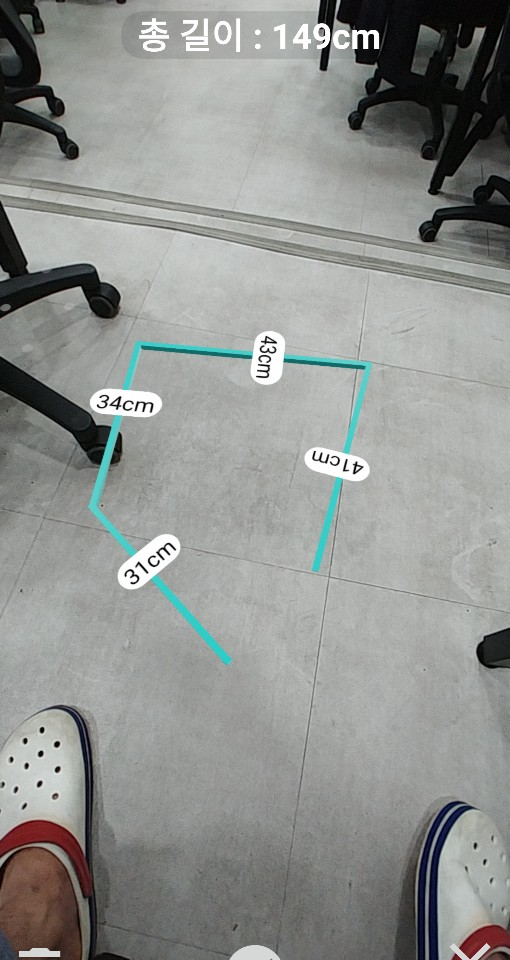
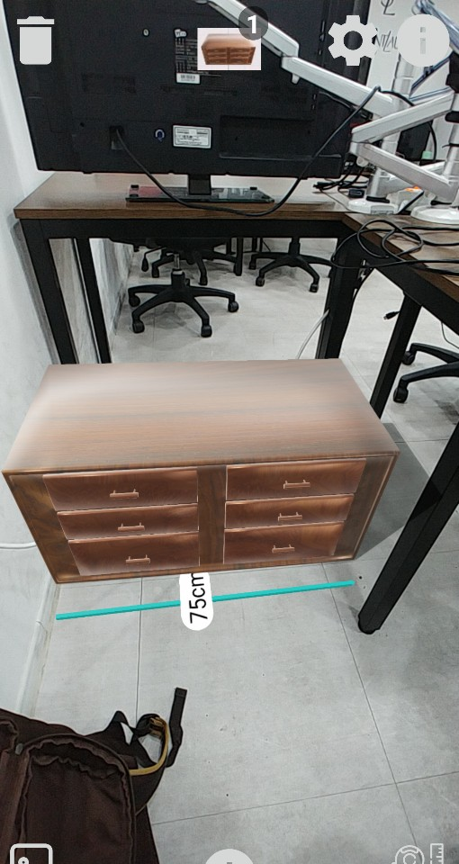
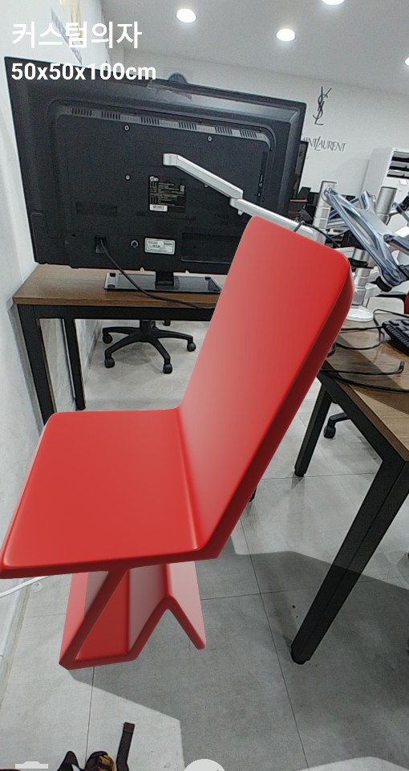
AR을 이용해 길이를 측정하고 자신의 공간에 가상의 가구를 배치해볼 수 있는 앱.